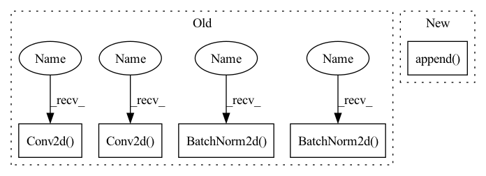

Pattern ID :1670

Before Change
self.conv2 = nn.Sequential(
// pw
nn.Conv2d(oup, hidden_dim, 1, 1, 0, bias=False),
nn.BatchNorm2d(hidden_dim),
nn.ReLU(inplace=False),
// dw
nn.Conv2d(hidden_dim, hidden_dim, 3, 1, 1, groups=hidden_dim, bias=False),
nn.BatchNorm2d(hidden_dim),
nn.ReLU(inplace=False),
// pw-linear
nn.Conv2d(hidden_dim, oup, 1, 1, 0, bias=False),
nn.BatchNorm2d(oup),
)
After Change
self.conv2 = torch.nn.ModuleList()
for i in range(n):
self.conv2.append(IRBlock(oup, hidden_dim))
def forward(self, x):
x = self.conv1(x)
In pattern: SUPERPATTERN
Frequency: 3
Non-data size: 5
Instances
Fragment ID: 3024318
Project Name: fire717/movenet.pytorch
Commit Name: 6eb59cd47bfde753530ed236335910bed9ba7c1d
Time: 2022-08-12
Author: fire15@126.com
File Name: lib/models/movenet_mobilenetv2.py
Class Name: InvertedResidual
Method Name: __init__
Parent Class: nn.Module
Fragment ID: 3024366
Project Name: tuttelikz/farabio
Commit Name: 1d44294f1fa3a0a8cd95bdbad9f2e4f53b43098b
Time: 2021-08-02
Author: s.askaruly@gmail.com
File Name: farabio/models/classification/conv/mobilenetv2.py
Class Name: Block
Method Name: __init__
Parent Class: nn.Module
Fragment ID: 3024319
Project Name: fire717/movenet.pytorch
Commit Name: 6eb59cd47bfde753530ed236335910bed9ba7c1d
Time: 2022-08-12
Author: fire15@126.com
File Name: lib/models/movenet_mobilenetv2.py
Class Name: InvertedResidual
Method Name: __init__
Parent Class: nn.Module
Fragment ID: 3024331
Project Name: opendr-eu/opendr
Commit Name: 18da6a5d3ed5c2a291cb9c600a9fe4e5e17e5671
Time: 2021-01-26
Author: ptosidis@gmail.com
File Name: src/perception/face_recognition/algorithm/backbone/model_mobilenet.py
Class Name: InvertedResidual
Method Name: __init__
Parent Class: nn.Module